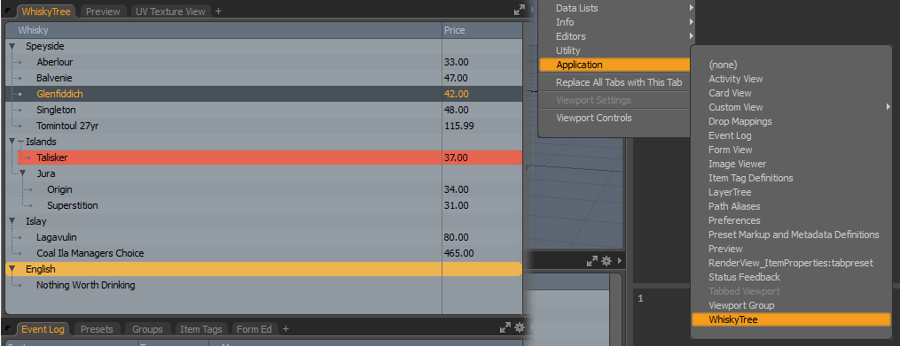

Python Treeview Example¶
Shows how to make a generic layer item and use that to create the tree structure, maintain selection and item state. It also shows some state flags for color, folding and setting the child type to an attribute.
Place this into the lxserv folder in your scripts directory or your Kit and open the WhiskyTree view from the top right Viewport Widget menu.
More Information¶
./Tree (lx-tree.hpp)
./Treeview
1 2 3 4 5 6 7 8 9 10 11 12 13 14 15 16 17 18 19 20 21 22 23 24 25 26 27 28 29 30 31 32 33 34 35 36 37 38 39 40 41 42 43 44 45 46 47 48 49 50 51 52 53 54 55 56 57 58 59 60 61 62 63 64 65 66 67 68 69 70 71 72 73 74 75 76 77 78 79 80 81 82 83 84 85 86 87 88 89 90 91 92 93 94 95 96 97 98 99 100 101 102 103 104 105 106 107 108 109 110 111 112 113 114 115 116 117 118 119 120 121 122 123 124 125 126 127 128 129 130 131 132 133 134 135 136 137 138 139 140 141 142 143 144 145 146 147 148 149 150 151 152 153 154 155 156 157 158 159 160 161 162 163 164 165 166 167 168 169 170 171 172 173 174 175 176 177 178 179 180 181 182 183 184 185 186 187 188 189 190 191 192 193 194 195 196 197 198 199 200 201 202 203 204 205 206 207 208 209 210 211 212 213 214 215 216 217 218 219 220 221 222 223 224 225 226 227 228 229 230 231 232 233 234 235 236 237 238 239 240 241 242 243 244 245 246 247 248 249 250 251 252 253 254 255 256 257 258 259 260 261 262 263 264 265 266 267 268 269 270 271 272 273 274 275 276 277 278 279 280 281 282 283 284 285 286 287 288 289 290 291 292 293 294 295 296 297 298 299 300 301 302 303 304 305 306 307 308 309 310 311 312 313 314 315 316 317 318 319 320 321 322 323 324 325 326 327 328 329 330 331 332 333 334 335 336 337 338 339 340 341 342 343 344 345 346 347 348 349 350 351 352 353 354 355 356 357 358 359 360 361 362 363 364 365 366 367 368 369 370 371 372 373 374 375 376 377 378 379 380 381 382 383 384 385 386 387 388 389 390 391 392 393 394 395 396 397 398 399 400 401 402 | # !/usr/bin/env python
import lx
import lxifc
SERVERNAME = 'WhiskyTreeView'
# --------------------------------------------------------------------------------------------------
# Node styles
# --------------------------------------------------------------------------------------------------
fTREE_VIEW_ITEM_ATTR = 0x00000001
fTREE_VIEW_ITEM_EXPAND = 0x00000002
fTREE_VIEW_ATTR_EXPAND = 0x00000004
fTREE_VIEW_ROWCOLOR_ORANGE = 0x00050000
fTREE_VIEW_ROWCOLOR_RED = 0x00010000
# --------------------------------------------------------------------------------------------------
# Generic layer node object that represents each entry in the tree
# --------------------------------------------------------------------------------------------------
class TreeNode(object):
_Primary = None
def __init__(self, name, price=-1.0, parent=None):
self.m_name = name
self.m_price = price
self.m_parent = parent
self.m_children = []
self.state = 0
self.selected = False
self.columns = (("Whisky", -1),
("Price", 90))
self.toolTips = {}
def AddNode(self, name, price=-1.0):
self.m_children.append( TreeNode(name, price, self) )
return self.m_children[-1]
def ClearSelection(self):
if self._Primary:
self.setPrimary()
self.SetSelected(False)
for child in self.m_children:
child.ClearSelection()
def SetSelected(self,val=True):
if val:
self.setPrimary(self)
self.selected = val
def isSelected(self):
return self.selected
@classmethod
def setPrimary(cls,primary=None):
cls._Primary = primary
@classmethod
def getPrimary(cls):
return cls._Primary
def setState(self,flag):
self.state = self.state | flag
def setToolTip(self,idx,tip):
self.toolTips[idx] = tip
def getToolTip(self,idx):
if self.toolTips.has_key(idx):
return self.toolTips[idx]
# --------------------------------------------------------------------------------------------------
# Build the structure
# --------------------------------------------------------------------------------------------------
_theTree = TreeNode('Whisky')
spey = _theTree.AddNode('Speyside')
spey.AddNode("Aberlour", 33.0)
spey.AddNode("Balvenie", 47.0)
spey.AddNode("Glenfiddich", 42.0)
spey.AddNode("Singleton", 48.0)
tom = spey.AddNode("Tomintoul 27yr", 115.99)
tom.setToolTip(0,"yummmmmmmm!")
# expand the first node
spey.setState(fTREE_VIEW_ITEM_EXPAND)
isle = _theTree.AddNode("Islands")
Talisker = isle.AddNode("Talisker", 37.0)
# make Talisker an attribute of isle
Talisker.setState(fTREE_VIEW_ITEM_ATTR | fTREE_VIEW_ROWCOLOR_RED)
jura = isle.AddNode("Jura")
jura.AddNode("Origin", 34.0)
jura.AddNode("Superstition", 31.0)
islay = _theTree.AddNode("Islay")
islay.AddNode("Lagavulin", 80.0)
Coal = islay.AddNode("Coal Ila Managers Choice", 465.0)
Coal.setToolTip(1,"How much!?!?!")
eng = _theTree.AddNode("English")
eng.AddNode("Nothing Worth Drinking")
eng.setState(fTREE_VIEW_ROWCOLOR_ORANGE)
# --------------------------------------------------------------------------------------------------
# Tree View
# --------------------------------------------------------------------------------------------------
class WhiskyTreeView(lxifc.TreeView,
lxifc.Tree,
lxifc.ListenerPort,
lxifc.Attributes):
# Gloabal list of all created tree views.
# These are used for shape and attribute changes
_listenerClients = {}
def __init__(self, node = None, curIndex = 0):
if node is None:
node = _theTree
self.m_currentNode = node
self.m_currentIndex = curIndex
# --------------------------------------------------------------------------------------------------
# Listener port
# --------------------------------------------------------------------------------------------------
@classmethod
def addListenerClient(cls,listener):
"""
Whenever a new tree view is created, we will add
a copy of its listener so that it can be notified
of attribute or shape changes
"""
treeListenerObj = lx.object.TreeListener(listener)
cls._listenerClients[treeListenerObj.__peekobj__()] = treeListenerObj
@classmethod
def removeListenerClient(cls,listener):
"""
When a view is destroyed, it will be removed from
the list of clients that need notification.
"""
treeListenerObject = lx.object.TreeListener(listener)
if cls._listenerClients.has_key(treeListenerObject.__peekobj__()):
del cls._listenerClients[treeListenerObject.__peekobj__()]
@classmethod
def notify_NewShape(cls):
for client in cls._listenerClients.values():
if client.test():
client.NewShape()
@classmethod
def notify_NewAttributes(cls):
for client in cls._listenerClients.values():
if client.test():
client.NewAttributes()
#--- --------------------------------------------------------------------
def lport_AddListener(self,obj):
"""
Called from core code with the object that wants to
bind to the listener port
"""
self.addListenerClient(obj)
def lport_RemoveListener(self,obj):
"""
Called from core when a listener needs to be removed from
the port.
"""
self.removeListenerClient(obj)
# --------------------------------------------------------------------------------------------------
# Target layer in the tree
# --------------------------------------------------------------------------------------------------
def targetNode(self):
"""
Returns the targeted layer node in the current tier
"""
return self.m_currentNode.m_children[ self.m_currentIndex ]
# --------------------------------------------------------------------------------------------------
# Each time the tree is spawned, we create a copy of ourselves at current
# location in the tree and return it
# --------------------------------------------------------------------------------------------------
def tree_Spawn(self, mode):
"""
Spawn a new instance of this tier in the tree.
"""
# create an instance of our current location in the tree
newTree = WhiskyTreeView(self.m_currentNode,self.m_currentIndex)
# Convert to a tree interface
newTreeObj = lx.object.Tree(newTree)
if mode == lx.symbol.iTREE_PARENT:
# move the tree to the parent tier
newTreeObj.ToParent()
elif mode == lx.symbol.iTREE_CHILD:
# move tree to child tier
newTreeObj.ToChild()
elif mode == lx.symbol.iTREE_ROOT:
#move tree to root tier
newTreeObj.ToRoot()
return newTreeObj
def tree_ToParent(self):
"""
Step up to the parent tier and set the selection in this
tier to the current items index
"""
m_parent = self.m_currentNode.m_parent
if m_parent:
self.m_currentIndex = m_parent.m_children.index(self.m_currentNode)
self.m_currentNode = m_parent
def tree_ToChild(self):
"""
Move to the child tier and set the selected node
"""
self.m_currentNode = self.m_currentNode.m_children[self.m_currentIndex]
def tree_ToRoot(self):
"""
Move back to the root tier of the tree
"""
self.m_currentNode = _theTree
def tree_IsRoot(self):
"""
Check if the current tier in the tree is the root tier
"""
if self.m_currentNode == _theTree:
return True
else:
return False
def tree_ChildIsLeaf(self):
"""
If the current tier has no children then it is
considered a leaf
"""
if len( self.m_currentNode.m_children ) > 0:
return False
else:
return True
def tree_Count(self):
"""
Returns the number of nodes in this tier of
the tree
"""
return len( self.m_currentNode.m_children )
def tree_Current(self):
"""
Returns the index of the currently targeted item in
this tier
"""
return self.m_currentIndex
def tree_SetCurrent(self, index):
"""
Sets the index of the item to target in this tier
"""
self.m_currentIndex = index
def tree_ItemState(self, guid):
"""
Returns the item flags that define the state.
"""
return self.targetNode().state
def tree_SetItemState(self, guid, state):
"""
Set the item flags that define the state.
"""
self.targetNode().state = state
# --------------------------------------------------------------------------------------------------
# Tree view
# --------------------------------------------------------------------------------------------------
def treeview_StoreState(self, uid):
lx.notimpl()
def treeview_RestoreState(self, uid):
lx.notimpl()
def treeview_ColumnCount(self):
return len(_theTree.columns)
def treeview_ColumnByIndex(self, columnIndex):
return _theTree.columns[columnIndex]
def treeview_ToPrimary(self):
"""
Move the tree to the primary selection
"""
if self.m_currentNode._Primary:
self.m_currentNode = self.m_currentNode._Primary
self.tree_ToParent()
return True
return False
def treeview_IsSelected(self):
return self.targetNode().isSelected()
def treeview_Select(self, mode):
if mode == lx.symbol.iTREEVIEW_SELECT_PRIMARY:
_theTree.ClearSelection()
self.targetNode().SetSelected()
elif mode == lx.symbol.iTREEVIEW_SELECT_ADD:
self.targetNode().SetSelected()
elif mode == lx.symbol.iTREEVIEW_SELECT_REMOVE:
self.targetNode().SetSelected(False)
elif mode == lx.symbol.iTREEVIEW_SELECT_CLEAR:
_theTree.ClearSelection()
def treeview_CellCommand(self, columnIndex):
lx.notimpl()
def treeview_BatchCommand(self, columnIndex):
lx.notimpl()
def treeview_ToolTip(self, columnIndex):
toolTip = self.targetNode().getToolTip(columnIndex)
if toolTip:
return toolTip
lx.notimpl()
def treeview_BadgeType(self, columnIndex, badgeIndex):
lx.notimpl()
def treeview_BadgeDetail(self, columnIndex, badgeIndex, badgeDetail):
lx.notimpl()
def treeview_IsInputRegion(self, columnIndex, regionID):
lx.notimpl()
def treeview_SupportedDragDropSourceTypes(self, columnIndex):
lx.notimpl()
def treeview_GetDragDropSourceObject(self, columnIndex, type):
lx.notimpl()
def treeview_GetDragDropDestinationObject(self, columnIndex, location):
lx.notimpl()
# --------------------------------------------------------------------------------------------------
# Attributes
# --------------------------------------------------------------------------------------------------
def attr_Count(self):
return len(_theTree.columns)
def attr_GetString(self, index):
node = self.targetNode()
if index == 0:
return node.m_name
elif node.m_price > 0.0:
return "%.2f" % node.m_price
else:
return ""
tags = {lx.symbol.sSRV_USERNAME: "whiskytreeview",
lx.symbol.sTREEVIEW_TYPE: "vpapplication WSTV whiskytreeview WhiskyTree"}
lx.bless(WhiskyTreeView, SERVERNAME, tags)
|